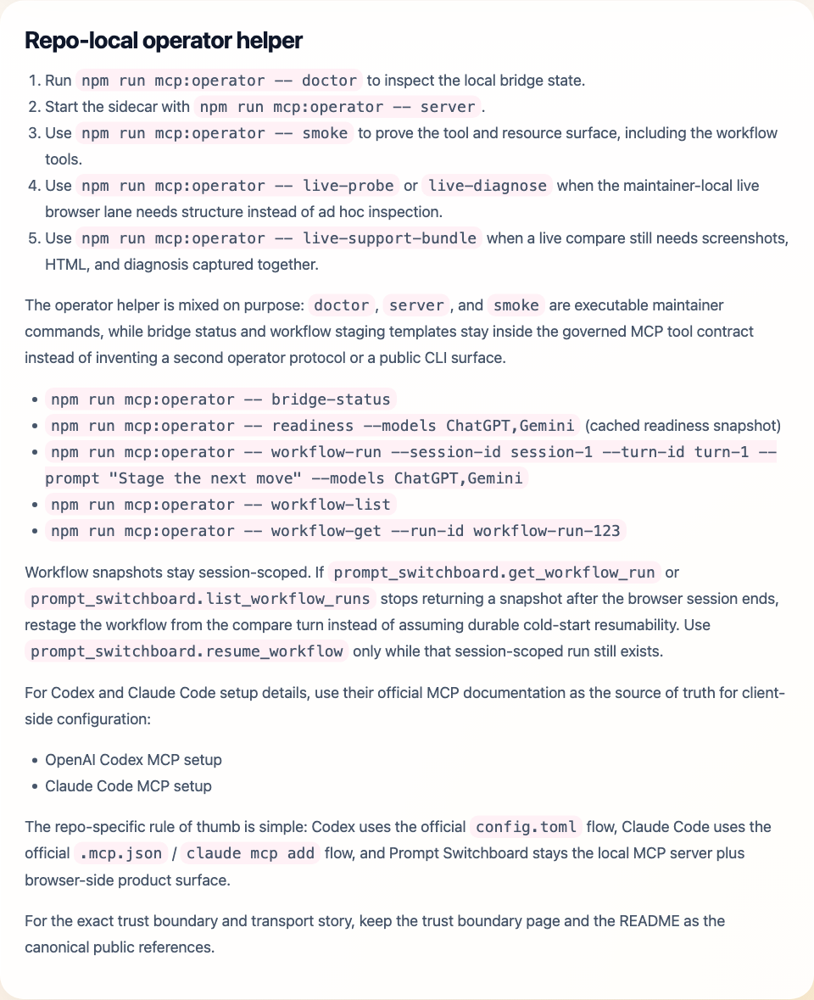
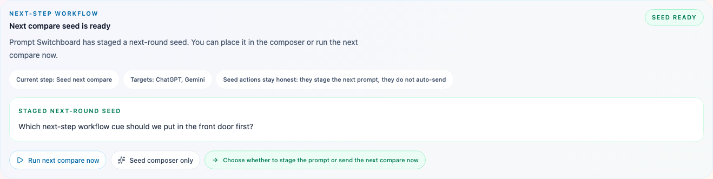

Use Prompt Switchboard with Codex and Claude Code MCP workflows, plus OpenCode / OpenClaw public packets.
Prompt Switchboard is not a generic AI assistant and not a raw browser automation port. It is a compare workspace that exposes a governed MCP surface for compare, retry, export, session, analyst, and next-step workflow actions inside the browser workflow you already trust.
Codex and Claude Code are the strongest repo-specific bindings in this release. OpenCode and OpenClaw can now use repo-shipped public-ready packets through their generic MCP client surfaces, but they still stay outside the main verified-host story.
The public distribution matrix now separates public bundle truth from official marketplace or registry truth, so this page does not have to blur "public packet shipped" with "official listing shipped."
When you want the shortest exact install packet for one host instead of the full matrix, use the host packets page.
What coding hosts can do here
- Check whether supported model tabs are ready before a compare run
- Queue one compare turn from a single prompt
- Retry only the failed model cards
- Export compare results as Markdown or summary text
- Read session state, run AI Compare Analyst, and inspect the built-in next-step workflow
What this surface does not become
- Not arbitrary browser automation
- Not a provider-neutral SDK
- Not a hosted relay
- Not a write-capable MCP control plane for unrelated sites
See the host integration surface
These screenshots are not generic concept art. They are repo-owned proof that the current host integration story is grounded in a real browser-side compare product, a real workflow panel, and a real analyst surface.


Know the boundary at a glance
Codex and Claude Code are the official coding products. Prompt Switchboard is the browser-side orchestration layer that helps those workflows stay compare-first inside the browser.
| Surface | What it is strongest at | What Prompt Switchboard adds |
|---|---|---|
| Official coding agent surface | Reading repos, editing files, running commands, and owning the coding task loop. | Prompt Switchboard does not replace that layer. |
| Prompt Switchboard browser orchestration layer | Managing already-open browser sessions, compare turns, retries, exports, and analyst runs. | Codex and Claude Code can call this governed product surface over MCP. |
Current host-facing contract
Today the host-facing contract is the repo-owned MCP server plus the shared bridge protocol inside this repository. Prompt Switchboard does not ship a public HTTP API or a general-purpose SDK in this release.
The current transport is stdio for the MCP client and a localhost bridge
for the extension runtime. Native Messaging remains a scaffold and future hardening
path, not the active transport in this release.
Current MCP tools
prompt_switchboard.check_readinessprompt_switchboard.open_model_tabsprompt_switchboard.compareprompt_switchboard.retry_failedprompt_switchboard.get_sessionprompt_switchboard.list_sessionsprompt_switchboard.export_compareprompt_switchboard.analyze_compareprompt_switchboard.run_workflowprompt_switchboard.list_workflow_runsprompt_switchboard.get_workflow_runprompt_switchboard.resume_workflowprompt_switchboard.bridge_status
Current MCP resources
prompt-switchboard://analysis/providersprompt-switchboard://builder/public-distributionprompt-switchboard://builder/support-matrixprompt-switchboard://models/catalogprompt-switchboard://models/readinessprompt-switchboard://sessions/currentprompt-switchboard://sites/capabilitiesprompt-switchboard://workflows/templates
If you are evaluating the real integration contract, start with
mcp/server.ts for the public tool and resource surface, then read
src/bridge/protocol.ts for the shared command and payload contract that the
extension and MCP server both use.
The resource layer now tells the same truth as the docs: use
prompt-switchboard://analysis/providers when you need the current
analyst-lane catalog and runtime boundary, use
prompt-switchboard://builder/public-distribution when you need the
machine-readable split between public bundle truth and official marketplace or registry
truth, use prompt-switchboard://builder/support-matrix when you need the
machine-readable host tiers, starter asset paths, official host docs, placement hints,
placeholder path, and first-call sequence, and use
prompt-switchboard://sites/capabilities when you need the current per-site
DOM/readiness/private-API boundary notes, and use
prompt-switchboard://workflows/templates when you need the built-in
workflow template order, supported tool flow, and session-scoped durability note without
guessing from prose.
Prompt Switchboard now also ships starter integration kits for the strongest current host bindings. Use the integration-kits folder when you want repo-owned Codex, Claude Code, OpenCode, or OpenClaw starter assets instead of building those snippets from scratch. That folder now also includes companion starter skill templates for all four documented hosts.
If you want a containerized host setup, use the Docker integration guide. That Docker surface packages the repo-owned MCP server and operator helper only. It does not turn Prompt Switchboard into a hosted compare service or a public HTTP API.
Use the public distribution matrix when you need the honest public answer to a different question: which host bundle is already public now, and which official listing has still not happened.
If the product lane itself is not proven yet, use the first compare guide before you spend time wiring coding hosts.
A healthy agent loop is simple: call prompt_switchboard.bridge_status, then
prompt_switchboard.check_readiness, then queue a turn with
prompt_switchboard.compare, then use
prompt_switchboard.analyze_compare and
prompt_switchboard.run_workflow when you want the built-in
compare-analyze-follow-up path, inspect the latest session-scoped workflow
snapshot with prompt_switchboard.get_workflow_run, list recent workflow
snapshots with prompt_switchboard.list_workflow_runs, and continue a
waiting run with prompt_switchboard.resume_workflow once you have the
external step result.
The workflow tools stay product-bound. They stage or inspect the built-in compare follow-up path; they do not turn Prompt Switchboard into a DAG engine, a hosted orchestrator, or a generic browser automation plane.
How to think about ecosystem fit
The strongest public bindings are MCP, OpenAI Codex, and Claude Code, because current repo evidence and official docs line up there.
OpenCode, OpenClaw, and other MCP-capable agent runtimes can still connect, but Prompt Switchboard should describe them as public-bundle-ready generic MCP paths, not as the core verified-host story.
That also means names like OpenCode and OpenClaw stay in the generic-MCP lane for now. They are real MCP-capable ecosystem surfaces, and this repo now ships public-ready packets and starter assets for them, but Prompt Switchboard still does not claim a fully verified repo-owned host lane there.
| Surface | Current truth |
|---|---|
| Repo-owned MCP server + product actions | Supported now |
| Codex / Claude Code browser workflow lane | Supported now as the strongest repo-specific host flow |
| Repo-shipped integration kits | Supported now for Codex and Claude Code, with public bundle-ready MCP packets for OpenCode and OpenClaw |
| OpenCode / OpenClaw host paths | Public-bundle-ready generic MCP client flows until a tested repo-owned host lane exists |
| Repo-local operator helper | Maintainer-only and intentionally not a public CLI |
| Workflow snapshots | Session-scoped runtime cache with explicit run/list/get/resume tools, not a durable workflow ledger |
| Switchyard runtime-backed model source | Maintainer-local / partial for the analyst lane when a local Switchyard service is reachable; it does not replace browser-tab compare |
| Public HTTP API / SDK / plugin ecosystem | Planned only, not supported now |
Current host setup routes
Keep this page focused on the builder contract, not the copy-paste setup steps for every host. The exact packet for one host now lives on the host packets page, while the machine-readable placement hints, starter assets, public-ready packets, and first-call flow live in support-matrix.json.
Use the MCP starter kits guide when you want the copy-paste starter assets, and use the public distribution matrix when you need the honest split between repo-owned packets and official published listings.
The short version stays the same: Codex and Claude Code are the strongest repo-specific lanes today; OpenCode and OpenClaw remain narrower public-bundle-ready / unverified-host paths until a verified repo-owned host lane is proven there.
Repo-local operator helper
-
Run
npm run mcp:operator -- doctorto inspect the local bridge state. - Start the MCP server with
npm run mcp:operator -- server. -
Use
npm run mcp:operator -- smoketo prove the tool and resource surface, including the workflow tools. -
Use
npm run mcp:operator -- live-probeorlive-diagnosewhen the maintainer-local live browser lane needs structure instead of ad hoc inspection. -
Use
npm run mcp:operator -- live-support-bundlewhen a live compare still needs screenshots, HTML, and diagnosis captured together.
The operator helper is mixed on purpose: doctor, server, and
smoke are executable maintainer commands, while bridge status and workflow
staging templates stay inside the governed MCP tool contract instead of inventing a
second operator protocol or a public CLI surface.
npm run mcp:operator -- bridge-status-
npm run mcp:operator -- readiness --models ChatGPT,Gemini(cached readiness snapshot) -
npm run mcp:operator -- workflow-run --session-id session-1 --turn-id turn-1 --prompt "Stage the next move" --models ChatGPT,Gemini npm run mcp:operator -- workflow-listnpm run mcp:operator -- workflow-get --run-id workflow-run-123-
npm run mcp:operator -- workflow-resume --run-id workflow-run-123 --external-update-json '{"stepId":"compare","status":"completed","output":{...}}'
Workflow snapshots stay session-scoped. If
prompt_switchboard.get_workflow_run or
prompt_switchboard.list_workflow_runs stops returning a snapshot after the
browser session ends, restage the workflow from the compare turn instead of assuming
durable cold-start resumability. Use
prompt_switchboard.resume_workflow only while that session-scoped run still
exists.
`workflow-list`, `workflow-get`, and `workflow-resume` now return a normalized workflow interpretation next to the raw MCP payload, so maintainers can see the current step, staged seed, and next external action without hand-decoding the full workflow snapshot.
For Codex and Claude Code setup details, use their official MCP documentation as the source of truth for client-side configuration:
The repo-specific rule of thumb is simple: Codex uses the official
config.toml flow, Claude Code uses the official .mcp.json /
claude mcp add flow, and Prompt Switchboard stays the repo-owned MCP
server plus browser-side product surface.
For the exact trust boundary and transport story, keep the trust boundary page and the README as the canonical public references.